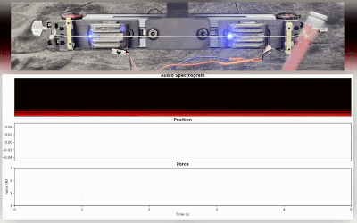
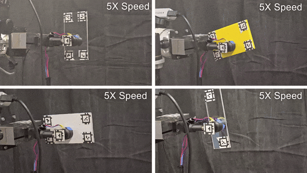
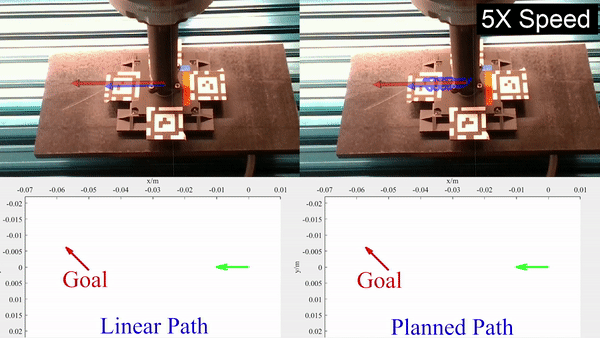
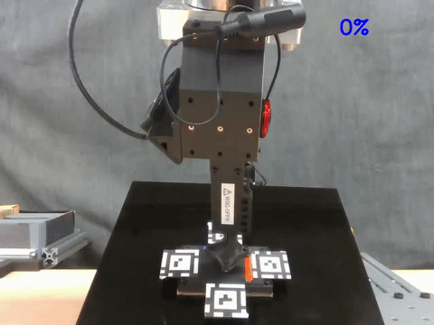
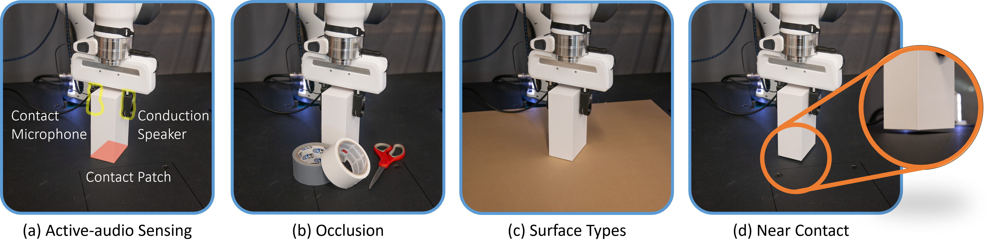
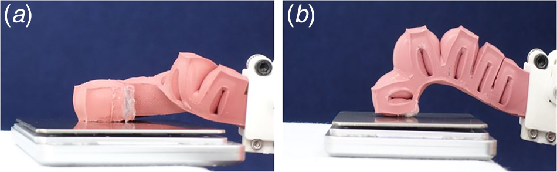

University of Michigan · Robotics
Xili Yi
I am a 5th-year PhD candidate in robotics working on contact-rich manipulation. My research combines physics, sensing, and learning to give robots a deeper understanding of how objects behave through friction, deformation, and vibration. I develop methods and sensing modalities that reveal the structure of contact—so robots can predict, control, and generalize their interactions more reliably in the real world.
I expect to graduate in Spring/Summer 2026 and am open to research and engineering opportunities in robotics.




Sound of Touch: Active Acoustic Tactile Sensing via String Vibrations
(submitted)
Sound of Touch treats a continuously excited tensioned string as an active acoustic tactile sensing element. By modeling contact-induced spectral shifts and learning from short dual-channel audio windows, the system estimates contact location and normal force while detecting slippage in real time, offering a lightweight pathway to distributed tactile sensing over extended robot surfaces.
VIB2MOVE: In-hand Object Reconfiguration via Fingertip Micro-Vibrations
Robotics: Science and Systems (RSS) 2025
VIB2MOVE introduces a fingertip actuator that modulates friction with micro-vibrations, a sliding dynamics model, and a planner that synchronizes end-effector motion with vibration phases. The approach reliably repositions planar objects using a simple parallel gripper, achieving sub-centimeter accuracy across a range of shapes.

VA2CONTACT: Visual-auditory Extrinsic Contact Estimation
IEEE International Conference on Robotics and Automation (ICRA) 2026
VA2CONTACT fuses global visual context with local cues from active audio excitation to infer where grasped objects touch the environment. The system leverages differentiable acoustic rendering, an attention-based fusion network, and a contact reasoning head that transfers from simulation to real hardware without additional finetuning.
Dual asymmetric limit surfaces and their applications to planar manipulation
Autonomous Robots
We extended Precise Object Sliding with Top Contact via Asymmetric Dual Limit Surfaces to more general cases including inclined surfaces.
Precise Object Sliding with Top Contact via Asymmetric Dual Limit Surfaces
Robotics: Science and Systems (RSS) 2023
We model the frictional interactions at the top gripper-object interface and bottom support plane simultaneously via asymmetric Dual Limit Surfaces, then plan twists that keep the gripper stuck while the object slips to its goal. The planner avoids orientation drift and empirically cuts final pose error by 90% compared to linear paths.

Torsional Stiffness Improvement of a Soft Pneumatic Finger Using Embedded Skeleton
Journal of Mechanisms and Robotics 2020
We enhance the torsional stiffness of soft robotic actuators without sacrificing their compliance by embedding tunable internal reinforcement. Our design preserves flexibility in bending and extension while providing significantly greater resistance to twist, enabling more stable, controllable, and load-capable soft robots.
2026
VA2CONTACT has been accepted by ICRA 2026.2025
Presented Vib2Move at RSS 2025, showing that with fingertip micro-vibrations that modulate friction in-hand, we can enable millimeter-level object reconfiguration with a parallel jaw gripper in free space.2024
Published Dual asymmetric limit surfaces and their applications to planar manipulation at Autonomous Robots, extended Dual Limit Surfaces model to more general cases.2023
Presented Dual Limit Surfaces at RSS 2023, showing that asymmetric friction modeling and constrained planners enable precise top-contact sliding with 90% lower orientation error than naive path planners.Let's collaborate
I'm always excited to chat about tactile perception, contact-rich planning, and experimental robotics. Reach me at yixili@umich.edu.